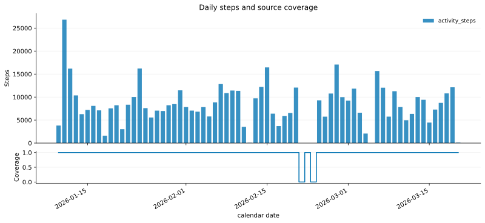
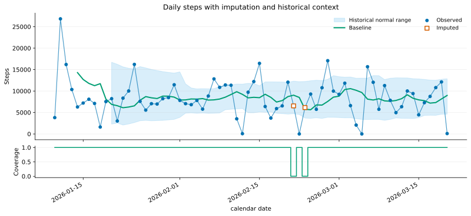
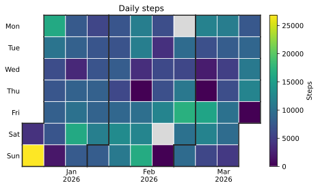
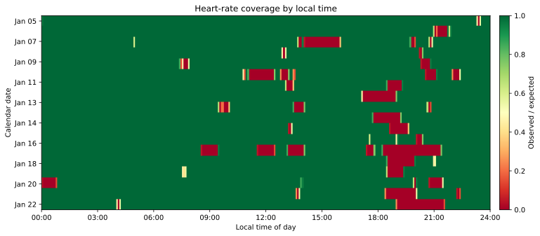
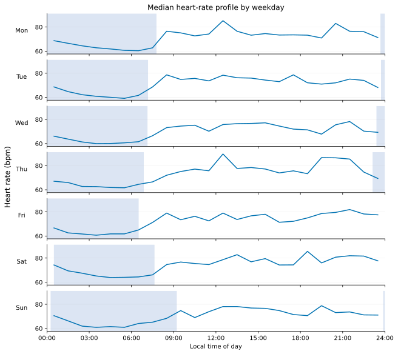
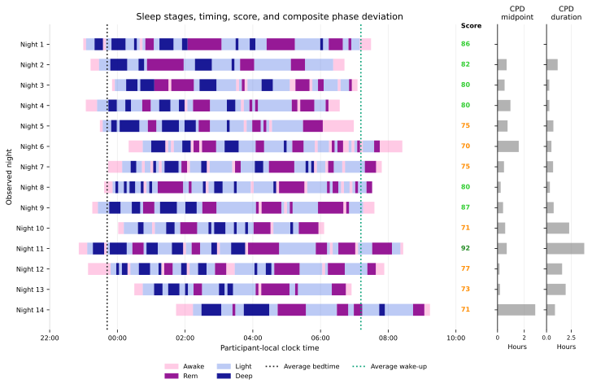
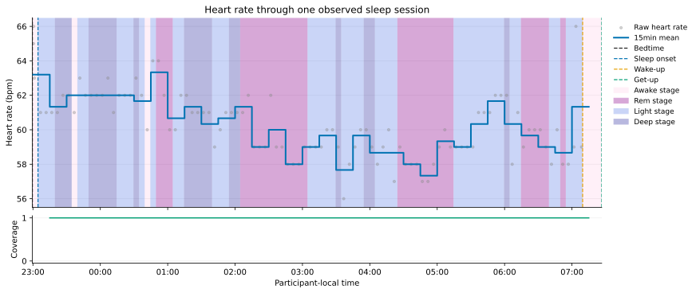
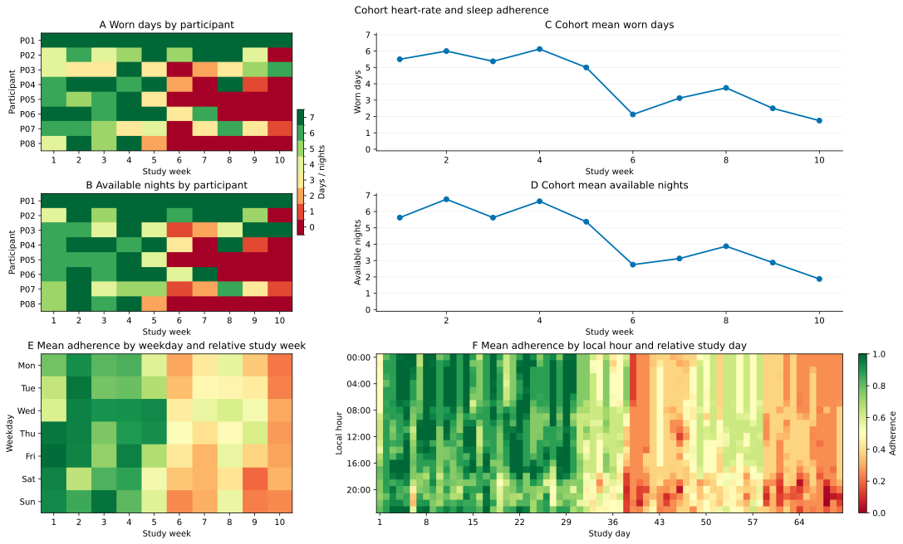

Visualization guide
The visualization module contains two kinds of plots. Trajectory plots accept an analysis-ready DataFrame, while composite plots accept a loader because they coordinate several streams in one figure. Every function returns its Matplotlib axes, so labels, annotations, and layout can be customized after the plot is created.
Choose a plot
Function |
Best used for |
Input |
|---|---|---|
One or more features over time, optionally with coverage |
Trajectory |
|
Values, imputation, historical baseline, and normal range |
Trend-enriched trajectory |
|
Child observations against each parent mean and its
|
Loader and feature request |
|
One daily value in a familiar calendar layout |
Daily trajectory |
|
Subdaily data availability by date and local time |
Subdaily trajectory |
|
Typical within-day pattern for each weekday |
Subdaily trajectory |
|
Consecutive daily, weekly, monthly, or yearly values and percentage changes |
Aggregated trajectory |
|
Sleep stages, timing, score, and optional CPD panels across nights |
Loader |
|
Raw and aggregated heart rate through one sleep session |
Loader |
|
Sleep, activity, heart rate, and missingness in aligned 24-hour rows |
Loader |
|
Cohort adherence by participant, week, weekday, and local hour |
Loader |
Trajectory and trend
Use plot_trajectory() for a direct view of a
feature. Add a coverage panel when the support behind each row matters:
from pywearable import activity, visualization
steps = activity.get_activity_statistics(
loader,
statistic=activity.ACTIVITY_STATISTIC_STEPS,
user_id="participant-01",
start_date="2026-01-01",
end_date="2026-02-01",
resolution="daily",
)
axes = visualization.plot_trajectory(
steps,
activity.ACTIVITY_STATISTIC_STEPS,
kind="bar",
show_coverage=True,
ylabel="Steps",
)


For historical context, enrich the trajectory first and pass the result to
plot_trajectory_trend():
from pywearable import trajectory
enriched = trajectory.compute_trajectory_trend(
steps,
activity.ACTIVITY_STATISTIC_STEPS,
)
visualization.plot_trajectory_trend(
enriched,
activity.ACTIVITY_STATISTIC_STEPS,
show_deviation=True,
ylabel="Steps",
)


Imputed values have a distinct marker or hatch. Clock features such as bedtime are displayed on a continuous clock axis across midnight.
Calendar views
A calendar heatmap is useful for daily features such as steps, total sleep time, resting heart rate, or a provider score:
visualization.plot_calendar_heatmap(
steps,
activity.ACTIVITY_STATISTIC_STEPS,
title="Daily steps",
colorbar_label="Steps",
)


Coverage heatmaps
plot_coverage_heatmap() uses rows for dates
and columns for local time. It is designed for questions such as “when during
the day is heart-rate coverage usually available?”


Typical within-day profiles
plot_weekly_profile() groups a subdaily
trajectory by weekday and local-time slot. The default line view creates seven
aligned panels; kind="heatmap" provides a compact matrix.


The profile describes repeated weekdays across the supplied interval. It does not replace chronological weekly aggregation, which is covered in Resolutions and hierarchies.
Sleep views
plot_sleep_summary() shows native stage
intervals across consecutive sleep calendar dates. It can add provider sleep
scores, average bedtime and wake-up boundaries, and narrow CPD panels.


visualization.plot_sleep_summary(
loader,
user_id="participant-01",
start_date="2026-01-01",
end_date="2026-01-14",
cpd=("midpoint", "duration"),
)
For this figure, start_date and end_date are inclusive sleep-calendar
labels. A selected night retains its complete stage intervals, including the
portion before midnight.
plot_sleep_heart_rate() focuses on one night
and overlays raw heart-rate samples, a fixed-window mean, sleep-stage
backgrounds, and optional coverage.


Use
plot_weekly_overview() when the goal is an
aligned multi-day view of sleep stages, steps, heart rate, and missingness.
Adherence monitoring
plot_adherence_summary() is a cohort view. It
shows worn days, available nights, cohort summaries, weekday patterns, and
local-hour patterns. Participants are aligned at their first date with
wearable or sleep evidence; follow_up_days can set a shared study window.


Save and customize
Pass show=False when building figures in a script and save_to to write
the output. Every plotting function returns its Matplotlib axis or axes; assign
that return value to update labels, annotations, limits, or layout with normal
Matplotlib methods:
axis = visualization.plot_calendar_heatmap(
steps,
activity.ACTIVITY_STATISTIC_STEPS,
show=False,
save_to="daily-steps.svg",
)
axis.set_title("Participant 01 — daily steps")